Plots grid results across values of a single parameter, specified by the user using var.vary, for a single definition of power, specified by power.definition.
If multiple things vary in the grid, the outcome (power, mdes, or sample size) will be averaged (marginalized) across the other varying factors. This treats the grid as a multifactor simulation, with this showing the "main effect" of the specified parameter.
Usage
# S3 method for class 'pumpgridresult'
plot(
x,
power.definition = NULL,
var.vary = NULL,
color = "MTP",
lines = TRUE,
include.title = FALSE,
...
)Arguments
- x
pumpgridresult object.
- power.definition
string; definition of power to plot. If NULL, plot all definitions as a facet wrap.
- var.vary
string; variable to vary on X axis. If NULL, and only one thing varies, then it will default to single varying parameter.
- color
string; Group lines by this element to make an interaction plot (default "MTP", giving one curve for each MTP).
- lines
logical; TRUE means connect dots with lines on the plots. FALSE means no lines.
- include.title
logical; whether to include/exclude title (if planning a facet wrap, for example).
- ...
additional parameters.
Examples
g <- pump_power_grid( d_m = "d3.2_m3ff2rc", MTP = c( "HO", "BF" ),
MDES = 0.10, J = seq(5, 10, 1), M = 5, K = 7, nbar = 58,
Tbar = 0.50, alpha = 0.15, numCovar.1 = 1,
numCovar.2 = 1, R2.1 = 0.1, R2.2 = 0.7,
ICC.2 = 0.25, ICC.3 = 0.25, rho = 0.4, tnum = 200)
plot(g, power.definition = 'min1')
